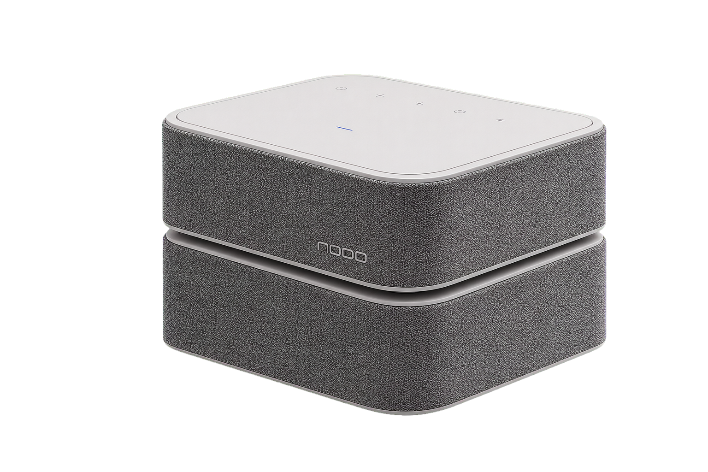

Modularity
Build your system.
Make it yours.
MODULAR AUDIO SYSTEM / CIS 2024
NODO is a modular wireless audio system built to adapt to your space, your taste, and the way you live.
Explore the system ↓
A calm identity built for a system that never stays still.
Build your system.
Make it yours.
Natural tone.
Thoughtfully tuned.
Clean, balanced sound
in every configuration.
Freedom to place,
stack, and expand.
A wordmark built from rounded modular forms: precise, calm, and adaptable.
ABCDEFGHIJKLMNO
abcdefghijklmno 0123456789
Sound, configured
around you.
From room setup to sound tuning, every interaction stays calm, direct, and modular.
View all applications →Select any chapter to open the full-size viewer.